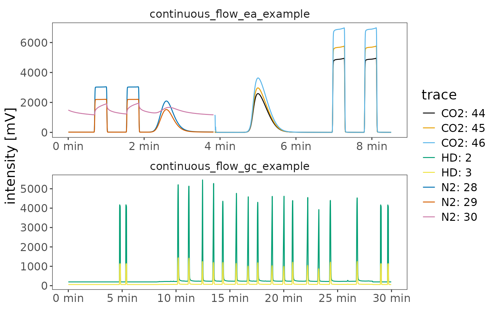
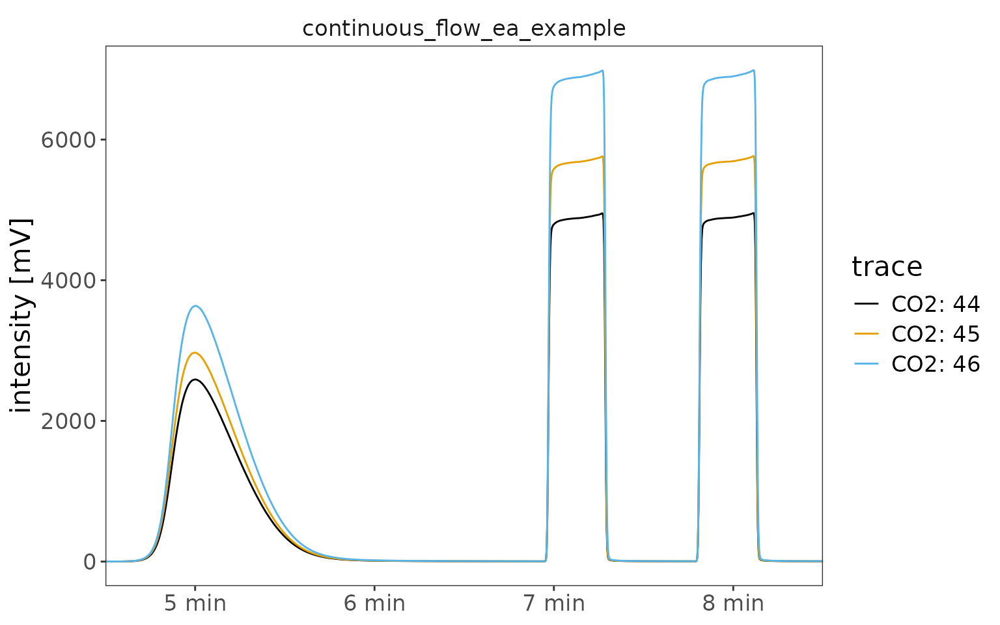
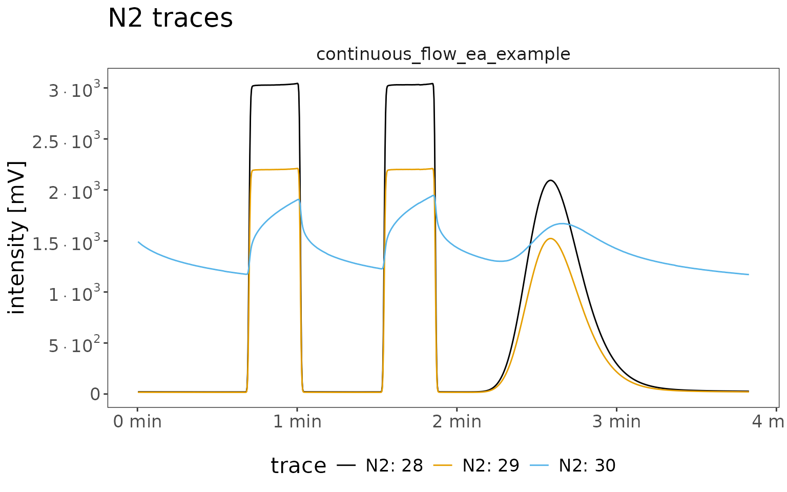
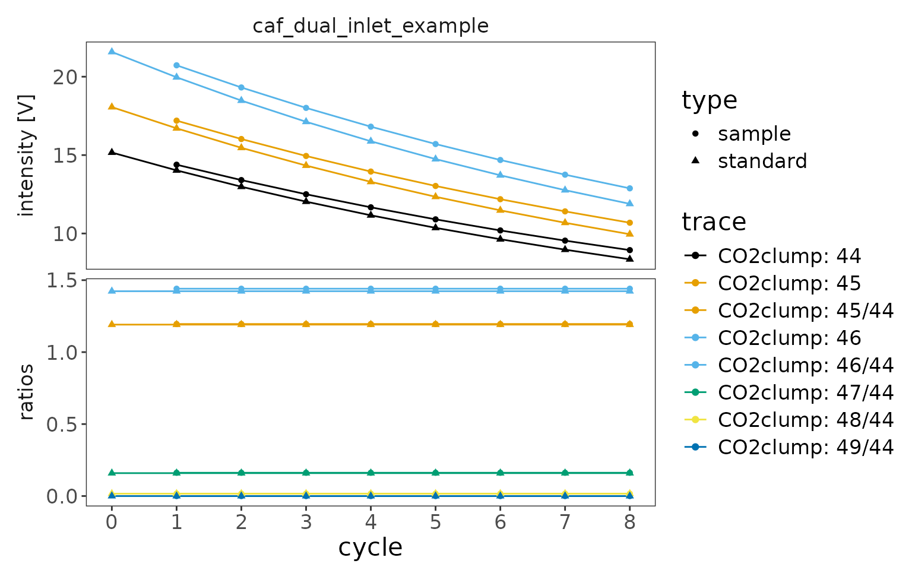
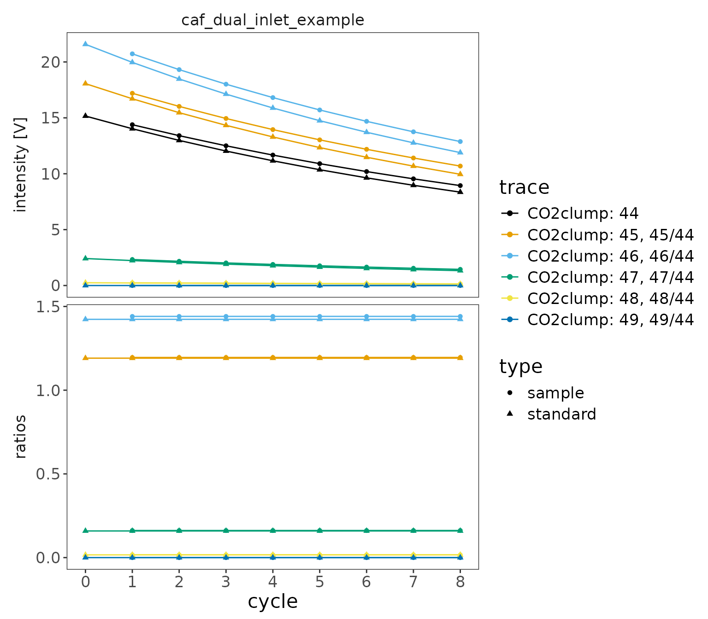

This step-by-step functionality guide explores the functions in the package structure flowchart. All functions below labelled with an
*are required steps of the standard data reading flow. Everything else is optional. Rarely used additional features that are mentioned here but not part of the standard flowchart are labeled asbonus.
# libraries
library(isoreader2) # load isoreader2 R package
library(dplyr) # for select syntax and mutating data framesReading isotope files
The first step is finding and reading your isotope data files. isoreader2 supports a range of continuous flow, dual inlet, and scan file formats:
# supported file types
ir_get_supported_file_types()# A tibble: 9 × 3
file_type min_isoextract_version vendor_software
<chr> <chr> <chr>
1 dxf 0.3.0 Isodat
2 cf 0.3.0 Isodat
3 iarc 0.3.0 IonOS
4 larc 0.3.0 LyticOS
5 bch 0.3.0 Callisto
6 imexp 0.3.0 Qtegra
7 did 0.3.0 Isodat
8 caf 0.3.0 Isodat
9 scn 0.3.0 Isodat
ir_find_isofiles() *
Point isoreader2 at a folder to discover the data files inside it.
The generic ir_find_isofiles() finds all supported types,
while ir_find_continuous_flow(),
ir_find_dual_inlet(), and ir_find_scans()
narrow the search to specific measurement types. The bundled example
files are available via ir_examples_folder().
# path to your data folder (here a local copy of the example files)
data_folder <- file.path("tmp_examples")
# find continuous flow files (.dxf/.cf) in the folder
file_paths <- data_folder |> ir_find_continuous_flow()
# show what was found
file_paths[1] "tmp_examples/continuous_flow_ea_example.dxf"
[2] "tmp_examples/continuous_flow_gc_example.cf"
ir_read_isofiles() *
Read the discovered files. This returns an ir_isofiles
object - a tibble with one row per file and the extracted datasets
stored in nested columns.
# read the files
isofiles <- file_paths |> ir_read_isofiles()
# show what was read
isofilesbonus combine collections with c()
Multiple ir_isofiles collections can be combined into
one with a simple c(), which row-binds them while
preserving the object type.
# combine two collections (here just the same files twice for illustration)
c(isofiles, isofiles)bonus ir_save_isofiles() /
ir_load_isofiles()
You can store an entire ir_isofiles collection to disk
(as an RDS file) and read it back exactly as it was, without re-reading
the original data files.
# save and reload the read isofiles
isofiles |> ir_save_isofiles(file.path("tmp_examples", "my_isofiles"))
reloaded <- ir_load_isofiles(file.path("tmp_examples", "my_isofiles"))Aggregating data
The nested ir_isofiles structure is convenient for
reading but not for analysis. Aggregation pulls the data together into a
tidy set of data frames (metadata, traces, cycles, scans, resistors)
that are easy to work with.
ir_aggregate_isofiles() *
# aggregate the data
dataset <- isofiles |> ir_aggregate_isofiles()
# show all that was recovered
# (as well as what was ignored / not aggregated)
datasetbonus intensity units
By default the raw signals are reported in millivolts
(mV). Pass a different intensity_units to
report voltage (mV, V), current
(fA, pA, nA, µA,
mA, A), or counts per second
(cps) instead. Conversions that cross the
voltage/current/cps boundary use the recorded resistor values
automatically (the same machinery is exposed as
ir_convert_intensity()).
# report intensities in nanoamperes instead of the default millivolts
isofiles |>
ir_aggregate_isofiles(intensity_units = "nA") |>
ir_get_data(traces = c("species", "mass", "time.s", "intensity.nA"))# A tibble: 24,515 × 7
uidx analysis file_name species mass time.s intensity.nA
<int> <int> <chr> <chr> <chr> <dbl> <dbl>
1 1 1 continuous_flow_ea_example N2 28 0.209 0.0705
2 1 1 continuous_flow_ea_example N2 28 0.418 0.0704
3 1 1 continuous_flow_ea_example N2 28 0.627 0.0704
4 1 1 continuous_flow_ea_example N2 28 0.836 0.0704
5 1 1 continuous_flow_ea_example N2 28 1.04 0.0703
6 1 1 continuous_flow_ea_example N2 28 1.25 0.0703
7 1 1 continuous_flow_ea_example N2 28 1.46 0.0703
8 1 1 continuous_flow_ea_example N2 28 1.67 0.0702
9 1 1 continuous_flow_ea_example N2 28 1.88 0.0702
10 1 1 continuous_flow_ea_example N2 28 2.09 0.0701
# ℹ 24,505 more rows
bonus ir_get_aggregator()
You can optionally use a different aggregator. Besides the default
standard aggregator, the package ships (from smallest to
largest) the metadata aggregator (metadata only), the
minimal aggregator (metadata plus the core data series),
and the extended aggregator, which is more elaborate and
provides access to additional columns (such as the resistor/cup
configuration and the vendor data table) from the data files.
# minimal vs. extended aggregator
ir_get_aggregator("minimal")
ir_get_aggregator("extended")
# using the extended aggregator instead of the default (standard)
isofiles |> ir_aggregate_isofiles(aggregator = "extended")bonus ir_register_aggregator()
Or build your own aggregator with ir_start_aggregator()
and/or expand an existing one with ir_add_to_aggregator(),
then register it via ir_register_aggregator(). This
functionality is rarely needed and thus not part of the package
structure flowchart.
my_agg <-
ir_get_aggregator("minimal") |>
# pull the "Identifier 1" metadata field out under a friendlier name
ir_add_to_aggregator("metadata", "sample_id", source = "Identifier 1") |>
ir_register_aggregator(name = "my_aggregator")
# show my aggregator summary
my_agg
# use it
isofiles |> ir_aggregate_isofiles(aggregator = "my_aggregator")bonus ir_get_problems() /
ir_show_problems()
Reading and aggregation are designed to be fail-safe: instead of stopping at the first error, problems are collected and reported. There were no problems with these example files so the result is empty, but this can be very helpful for figuring out what went wrong.
ir_get_problems() returns the problems as a data frame
for further inspection:
isofiles |> ir_get_problems()# A tibble: 0 × 6
# ℹ 6 variables: uidx <int>, file <chr>, type <chr>, call <chr>, message <chr>,
# condition <list>
dataset |> ir_get_problems()# A tibble: 0 × 6
# ℹ 6 variables: uidx <int>, file <chr>, type <chr>, call <chr>, message <chr>,
# condition <list>ir_show_problems() instead just prints out all the
problems directly:
isofiles |> ir_show_problems()
dataset |> ir_show_problems()Accessing the data
ir_get_data()
At any point you can pull the data of interest out of the aggregated
dataset with ir_get_data(), selecting columns from each
dataset using dplyr::select() syntax. Columns selected from
more than one dataset are automatically combined with a join.
# direct access to the individual datasets
dataset$metadata# A tibble: 2 × 27
uidx file_path file_name analysis timestamp type h3_factor Row
<int> <chr> <chr> <int> <dttm> <chr> <chr> <chr>
1 1 tmp_exampl… continuo… 1 2017-02-09 19:55:40 cf NA 5
2 2 tmp_exampl… continuo… 1 2013-07-13 23:42:40 cf 2.794310… NA
# ℹ 19 more variables: `Peak Center` <chr>, `Check Ref. Dilution` <chr>,
# `H3 Stability` <chr>, `H3 Factor` <chr>, Amount <chr>, Type <chr>,
# `EA Method` <chr>, `Identifier 1` <chr>, `Identifier 2` <chr>,
# Analysis <chr>, Comment <chr>, Preparation <chr>, Method <chr>, Line <chr>,
# `GC Method` <chr>, `AS Sample` <chr>, `AS Method` <chr>,
# `Pre Script` <chr>, `Post Script` <chr>
dataset$traces# A tibble: 24,515 × 7
uidx analysis species mass tp time.s intensity.mV
<int> <int> <chr> <chr> <int> <dbl> <dbl>
1 1 1 N2 28 1 0.209 21.2
2 1 1 N2 28 2 0.418 21.1
3 1 1 N2 28 3 0.627 21.1
4 1 1 N2 28 4 0.836 21.1
5 1 1 N2 28 5 1.04 21.1
6 1 1 N2 28 6 1.25 21.1
7 1 1 N2 28 7 1.46 21.1
8 1 1 N2 28 8 1.67 21.1
9 1 1 N2 28 9 1.88 21.1
10 1 1 N2 28 10 2.09 21.0
# ℹ 24,505 more rows
# retrieve + combine data with dplyr select syntax
dataset |>
ir_get_data(
metadata = c("file_name", "analysis", sample = "Identifier 1"),
traces = c("species", "mass", "time.s", "intensity.mV")
)# A tibble: 24,515 × 8
uidx analysis file_name sample species mass time.s intensity.mV
<int> <int> <chr> <chr> <chr> <chr> <dbl> <dbl>
1 1 1 continuous_flow_ea_e… aceta… N2 28 0.209 21.2
2 1 1 continuous_flow_ea_e… aceta… N2 28 0.418 21.1
3 1 1 continuous_flow_ea_e… aceta… N2 28 0.627 21.1
4 1 1 continuous_flow_ea_e… aceta… N2 28 0.836 21.1
5 1 1 continuous_flow_ea_e… aceta… N2 28 1.04 21.1
6 1 1 continuous_flow_ea_e… aceta… N2 28 1.25 21.1
7 1 1 continuous_flow_ea_e… aceta… N2 28 1.46 21.1
8 1 1 continuous_flow_ea_e… aceta… N2 28 1.67 21.1
9 1 1 continuous_flow_ea_e… aceta… N2 28 1.88 21.1
10 1 1 continuous_flow_ea_e… aceta… N2 28 2.09 21.0
# ℹ 24,505 more rows
shortcuts ir_get_metadata() /
ir_get_traces() / …
For the common case of grabbing a whole dataset, the shortcut
functions ir_get_metadata(), ir_get_traces(),
ir_get_cycles(), ir_get_scans(), and
ir_get_resistors() retrieve all columns of the respective
dataset.
# all metadata columns
dataset |> ir_get_metadata()# A tibble: 2 × 27
uidx analysis file_path file_name timestamp type h3_factor Row
<int> <int> <chr> <chr> <dttm> <chr> <chr> <chr>
1 1 1 tmp_exampl… continuo… 2017-02-09 19:55:40 cf NA 5
2 2 1 tmp_exampl… continuo… 2013-07-13 23:42:40 cf 2.794310… NA
# ℹ 19 more variables: `Peak Center` <chr>, `Check Ref. Dilution` <chr>,
# `H3 Stability` <chr>, `H3 Factor` <chr>, Amount <chr>, Type <chr>,
# `EA Method` <chr>, `Identifier 1` <chr>, `Identifier 2` <chr>,
# Analysis <chr>, Comment <chr>, Preparation <chr>, Method <chr>, Line <chr>,
# `GC Method` <chr>, `AS Sample` <chr>, `AS Method` <chr>,
# `Pre Script` <chr>, `Post Script` <chr>
# all traces (joined with the file metadata)
dataset |> ir_get_traces()# A tibble: 24,515 × 8
uidx analysis file_name species mass tp time.s intensity.mV
<int> <int> <chr> <chr> <chr> <int> <dbl> <dbl>
1 1 1 continuous_flow_ea_ex… N2 28 1 0.209 21.2
2 1 1 continuous_flow_ea_ex… N2 28 2 0.418 21.1
3 1 1 continuous_flow_ea_ex… N2 28 3 0.627 21.1
4 1 1 continuous_flow_ea_ex… N2 28 4 0.836 21.1
5 1 1 continuous_flow_ea_ex… N2 28 5 1.04 21.1
6 1 1 continuous_flow_ea_ex… N2 28 6 1.25 21.1
7 1 1 continuous_flow_ea_ex… N2 28 7 1.46 21.1
8 1 1 continuous_flow_ea_ex… N2 28 8 1.67 21.1
9 1 1 continuous_flow_ea_ex… N2 28 9 1.88 21.1
10 1 1 continuous_flow_ea_ex… N2 28 10 2.09 21.0
# ℹ 24,505 more rows
bonus ir_get_vendor_data_table()
Some file formats also store the vendor’s own computed results table
(the table Isodat shows in its results view: per-peak or per-cycle
intensities, retention times, ratios, deltas, etc.). This
vendor_data_table is only available from a few
formats — the isodat .dxf, .cf,
.did, and .caf files — and it is only
aggregated by the "extended" aggregator (it is
dropped by the default "standard" aggregator as well as the
"minimal" and "metadata" aggregators). Its
columns are kept under their original names (with units,
e.g. "Rt [s]"), numeric by default with the rare
string/integer columns (e.g. "Ref. Name",
"Nr.") kept as-is.
# aggregate with the extended aggregator so the vendor data table is included
dataset_ext <- isofiles |> ir_aggregate_isofiles(aggregator = "extended")
# retrieve the vendor data table (joined with the file metadata)
dataset_ext |> ir_get_vendor_data_table()# A tibble: 25 × 80
uidx analysis file_name species `Start [s]` `Rt [s]` `End [s]`
<int> <int> <chr> <chr> <dbl> <dbl> <dbl>
1 1 1 continuous_flow_ea_exa… N2 40.1 60.0 63.3
2 1 1 continuous_flow_ea_exa… N2 90.9 111. 114.
3 1 1 continuous_flow_ea_exa… N2 126. 155. 217.
4 1 1 continuous_flow_ea_exa… CO2 274. 300. 366.
5 1 1 continuous_flow_ea_exa… CO2 417. 436. 446.
6 1 1 continuous_flow_ea_exa… CO2 467. 487. 497.
7 2 1 continuous_flow_gc_exa… H2 283. 286. 293.
8 2 1 continuous_flow_gc_exa… H2 318. 321. 328.
9 2 1 continuous_flow_gc_exa… H2 606. 612. 635.
10 2 1 continuous_flow_gc_exa… H2 666. 672. 699.
# ℹ 15 more rows
# ℹ 73 more variables: `Ampl 28 [mV]` <dbl>, `Ampl 29 [mV]` <dbl>,
# `Ampl 30 [mV]` <dbl>, `BGD 28 [mV]` <dbl>, `BGD 29 [mV]` <dbl>,
# `BGD 30 [mV]` <dbl>, Nr. <int>, `rIntensity 28 [mVs]` <dbl>,
# `rIntensity 29 [mVs]` <dbl>, `rIntensity 30 [mVs]` <dbl>,
# `rIntensity All [mVs]` <dbl>, `Intensity 28 [Vs]` <dbl>,
# `Intensity 29 [Vs]` <dbl>, `Intensity 30 [Vs]` <dbl>, …
ir_filter_metadata() /
ir_mutate_metadata() / ir_join_metadata()
You can filter, add to, or join into the metadata while keeping the
rest of the datasets consistent. ir_filter_metadata()
cascades the filter to all other datasets so they always stay in
sync.
# keep only continuous flow files and add a derived label column
dataset |>
ir_filter_metadata(type == "cf") |>
ir_mutate_metadata(label = paste(file_name, analysis, sep = " / ")) |>
ir_get_metadata(metadata = c("file_name", "analysis", "label"))# A tibble: 2 × 4
uidx analysis file_name label
<int> <int> <chr> <chr>
1 1 1 continuous_flow_ea_example continuous_flow_ea_example / 1
2 2 1 continuous_flow_gc_example continuous_flow_gc_example / 1
These functions also work directly on an unaggregated
ir_isofiles object (applied individually to each file),
though that is significantly slower than working on an aggregated
dataset.
bonus ir_filter_for_continuous_flow() /
ir_filter_for_dual_inlet() /
ir_filter_for_scans()
If a dataset mixes measurement types, these convenience filters keep
only the files of one type (filtering on the metadata type
field) and cascade to all datasets, just like
ir_filter_metadata().
# keep only the continuous flow files
dataset |>
ir_filter_for_continuous_flow() |>
ir_get_metadata(metadata = c("file_name", "type"))# A tibble: 2 × 4
uidx analysis file_name type
<int> <int> <chr> <chr>
1 1 1 continuous_flow_ea_example cf
2 2 1 continuous_flow_gc_example cf
bonus ir_save_aggregated_data() /
ir_load_aggregated_data()
Aggregated data can be stored to (and loaded from) a parquet file for fast, language-independent access. This requires the suggested arrow package.
# save and reload the aggregated data
dataset |> ir_save_aggregated_data(file.path("tmp_examples", "my_dataset"))
reloaded <- ir_load_aggregated_data(file.path("tmp_examples", "my_dataset"))Calculating ratios
ir_calculate_ratios()
Isotope work is all about ratios.
ir_calculate_ratios() adds two columns -
ratio_name (e.g. "45/44") and
ratio - to the traces, cycles,
and/or scans of an aggregated dataset. By default each mass
is divided by the numerically lowest (“base”) mass of the same species
at each time/cycle/scan position.
dataset_ratios <- dataset |> ir_calculate_ratios()
dataset_ratios |>
ir_get_data(
metadata = "file_name",
traces = c("species", "mass", "time.s", "ratio_name", "ratio")
)# A tibble: 24,515 × 8
uidx analysis file_name species mass time.s ratio_name ratio
<int> <int> <chr> <chr> <chr> <dbl> <chr> <dbl>
1 1 1 continuous_flow_ea_exam… N2 28 0.209 NA NA
2 1 1 continuous_flow_ea_exam… N2 28 0.418 NA NA
3 1 1 continuous_flow_ea_exam… N2 28 0.627 NA NA
4 1 1 continuous_flow_ea_exam… N2 28 0.836 NA NA
5 1 1 continuous_flow_ea_exam… N2 28 1.04 NA NA
6 1 1 continuous_flow_ea_exam… N2 28 1.25 NA NA
7 1 1 continuous_flow_ea_exam… N2 28 1.46 NA NA
8 1 1 continuous_flow_ea_exam… N2 28 1.67 NA NA
9 1 1 continuous_flow_ea_exam… N2 28 1.88 NA NA
10 1 1 continuous_flow_ea_exam… N2 28 2.09 NA NA
# ℹ 24,505 more rows
bonus base mass, additive offsets, and normalization
The base mass can be overridden per species by name
(e.g. N2 = 28, CO2 = 44). For continuous flow
(traces) and scans data a small additive
offset is added to numerator and denominator before dividing, which
stabilizes the ratio where the signal is near the baseline; it is
configurable per unit family
(num_add.V/denom_add.V for voltage,
num_add.nA/denom_add.nA for current,
num_add.cps/denom_add.cps for counts) and is
always 0 for dual inlet cycles. Finally,
normalize_ratios can divide each ratio by a per-file
summary function such as mean, median,
min, or max.
dataset |>
ir_calculate_ratios(N2 = 28, normalize_ratios = median) |>
ir_get_data(
metadata = "file_name",
traces = c("species", "mass", "ratio_name", "ratio")
)# A tibble: 24,515 × 7
uidx analysis file_name species mass ratio_name ratio
<int> <int> <chr> <chr> <chr> <chr> <dbl>
1 1 1 continuous_flow_ea_example N2 28 NA NA
2 1 1 continuous_flow_ea_example N2 28 NA NA
3 1 1 continuous_flow_ea_example N2 28 NA NA
4 1 1 continuous_flow_ea_example N2 28 NA NA
5 1 1 continuous_flow_ea_example N2 28 NA NA
6 1 1 continuous_flow_ea_example N2 28 NA NA
7 1 1 continuous_flow_ea_example N2 28 NA NA
8 1 1 continuous_flow_ea_example N2 28 NA NA
9 1 1 continuous_flow_ea_example N2 28 NA NA
10 1 1 continuous_flow_ea_example N2 28 NA NA
# ℹ 24,505 more rows
Visualizing data
isoreader2 provides quick-look plotting functions for each
measurement type. They operate on aggregated data and return regular
ggplot objects that you can further customize. To add your
own ggplot2 layers (e.g. + labs(...) or
+ theme(...)), attach ggplot2 with
library(ggplot2) first.
ir_plot_continuous_flow()
dataset |> ir_plot_continuous_flow(facet = file_name)
Narrow the plot down with species/mass and
zoom in with a time window given either in seconds
(time_window.s) or minutes
(time_window.min):
dataset |>
ir_plot_continuous_flow(
species = "CO2",
facet = file_name,
time_window.min = c(4.5, 8.5)
)
Add calculated ratios to the plot. When more than one
data type is present (intensities and ratios), they are automatically
split into facet rows (data_type_as_facet = auto()):
dataset |>
ir_calculate_ratios(normalize_ratios = median) |>
ir_plot_continuous_flow(
species = "CO2",
ratio = "45/44",
facet = file_name,
time_window.min = c(4.5, 8.5)
)
The plots are ordinary ggplot objects (the package theme
ir_default_theme() is always applied), so you can keep
customizing with ggplot2 layers - and tune the aesthetics with arguments
like color, scientific, linetype,
or color_values:
library(ggplot2)
dataset |>
ir_plot_continuous_flow(
species = "N2",
facet = file_name,
scientific = TRUE
) +
labs(title = "N2 traces") +
theme(legend.position = "bottom")
bonus ir_generate_traces_tibble() /
ir_generate_cycles_tibble() /
ir_generate_scans_tibble()
If you want the exact tibble that a plot would draw (e.g. to build
your own plot or do further analysis), the
ir_generate_*_tibble() helpers return it without plotting.
They take the same
species/mass/ratio arguments and
add the trace, data_type, and
value columns the plotting functions use.
dataset |> ir_generate_traces_tibble(species = "CO2")# A tibble: 4,008 × 35
uidx analysis species mass tp time.s intensity.mV file_path file_name
<int> <int> <chr> <chr> <int> <dbl> <dbl> <chr> <chr>
1 1 1 CO2 44 1 232. 26.6 tmp_example… continuo…
2 1 1 CO2 44 2 232. 26.4 tmp_example… continuo…
3 1 1 CO2 44 3 232. 26.4 tmp_example… continuo…
4 1 1 CO2 44 4 232. 22.2 tmp_example… continuo…
5 1 1 CO2 44 5 232. 3.76 tmp_example… continuo…
6 1 1 CO2 44 6 233. 0.408 tmp_example… continuo…
7 1 1 CO2 44 7 233. 0.0550 tmp_example… continuo…
8 1 1 CO2 44 8 233. -0.0193 tmp_example… continuo…
9 1 1 CO2 44 9 233. -0.0174 tmp_example… continuo…
10 1 1 CO2 44 10 233. -0.0231 tmp_example… continuo…
# ℹ 3,998 more rows
# ℹ 26 more variables: timestamp <dttm>, type <chr>, h3_factor <chr>,
# Row <chr>, `Peak Center` <chr>, `Check Ref. Dilution` <chr>,
# `H3 Stability` <chr>, `H3 Factor` <chr>, Amount <chr>, Type <chr>,
# `EA Method` <chr>, `Identifier 1` <chr>, `Identifier 2` <chr>,
# Analysis <chr>, Comment <chr>, Preparation <chr>, Method <chr>, Line <chr>,
# `GC Method` <chr>, `AS Sample` <chr>, `AS Method` <chr>, …
ir_plot_dual_inlet()
di_dataset <-
data_folder |>
ir_find_dual_inlet() |>
ir_read_isofiles() |>
ir_aggregate_isofiles("V") |>
ir_calculate_ratios()
di_dataset |> ir_plot_dual_inlet(facet = file_name)
The same species/mass/ratio
filters apply, and cycle_window zooms to a range of
cycles:
di_dataset |> ir_plot_dual_inlet(mass = c(44, 45, 46), facet = file_name)
ir_plot_scans()
For scan files with more than one scan type, specify which one to
plot (x_window zooms the x axis the same way
time_window.s does for continuous flow):
data_folder |>
ir_find_scans() |>
ir_read_isofiles() |>
ir_aggregate_isofiles("V") |>
ir_plot_scans(scan_type = "high voltage")
Exporting data
ir_export_to_excel()
Finally, you can export individual data frames (typically retrieved
with the ir_get_*() functions) to an Excel file, one sheet
per data frame. Named arguments set the sheet names; unnamed ones use
"Sheet{position}". This requires the suggested
openxlsx package.
ir_export_to_excel(
metadata = dataset |> ir_get_metadata(),
traces = dataset |> ir_get_traces(),
file = "tmp_examples/my_dataset.xlsx"
)Package options
bonus ir_options() / ir_get_option()
A handful of package-wide options control isoreader2’s behavior.
ir_get_options() lists them, ir_get_option()
reads one, and ir_options() sets them. For example,
debug = TRUE disables the fail-safe error catching so
problems surface with a full traceback, which is useful when
troubleshooting a reader.
# list available options and read one
names(ir_get_options())[1] "aggregators" "debug" "auto_use_ansi"
ir_get_option("debug")[1] FALSE
# set an option (here enable debug mode), then restore the default
invisible(ir_options(debug = TRUE))
ir_get_option("debug")[1] TRUE